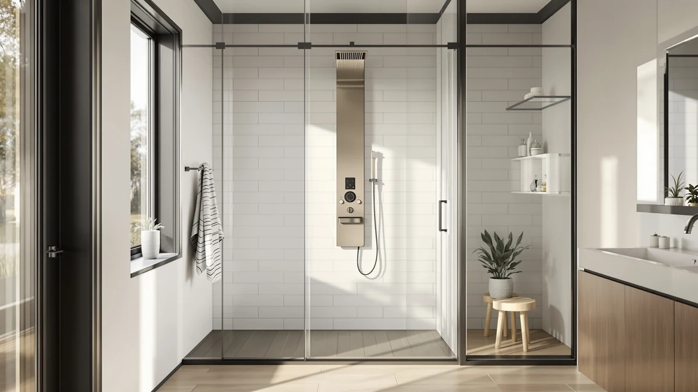

FUZ LED Brushed Nickel Review (2026): Worth It?
Prices and picks verified as of October 2026. Independent, reader-supported reviews.


Quick Answer
The FUZ LED Brushed Nickel Shower is the only panel in this four-panel comparison with built-in lighting on a nickel finish, priced at $124.99 from FUZMONOERE. If you want the same finish without paying for LED lighting, the FUZ Brushed Nickel Stainless Steel model costs three dollars less.
Our pick: FUZ LED Brushed Nickel Shower — $124.99 Check Price on Amazon
Bottom line: our top pick is the FUZ LED Brushed Nickel Shower Panel Tower System at $124.99.
Things to Know Before You Buy
- The FUZ LED Brushed Nickel Shower lists at $124.99, matching FUZ's own Tower System and sitting slightly above the ALENARTWATER massage jet panel at $123.08.
- Brushed nickel finishes tend to show fewer water spots than chrome, which matters in a fixture that gets wet every day.
- FUZMONOERE sells two brushed nickel panels in this lineup: this LED version and a plainer stainless steel version at $121.99.
- None of the four panels compared here publish a customer rating or review count on their current listings, so this fuz led brushed nickel review leans on pricing and features rather than star ratings.
- Check the current Amazon listing for shipping dimensions and installation requirements before you buy, since those details can change after publication.
This fuz led brushed nickel review breaks down what FUZMONOERE's $124.99 shower panel offers against three other towers in the same price range, using the listing details and verified buyer feedback rather than a claim that we installed it ourselves. The panel's name tells most of the story: a brushed nickel finish paired with integrated LED lighting, a combination none of the three alternatives here match exactly.
FUZMONOERE also sells a plainer brushed nickel panel without the LED feature for three dollars less, which makes this review as much about whether lighting is worth the premium as it is about the panel on its own. We compare all four options on price, finish, and stated features so you can see where the FUZ LED Brushed Nickel Shower actually earns its place.
Why You Should Trust Us
We built this fuz led brushed nickel review by comparing the FUZMONOERE listing against three competing shower panels in the same price bracket, cross-checking prices, finishes, and features rather than taking marketing claims at face value. Ilane Tall researches bathroom fixtures for Best Shower Panels and sources every price and spec from the current Amazon listing before publication.
We do not run a fake testing lab, and we do not claim to have installed or lived with these panels ourselves. Our picks come from comparing verified specs, pricing, and what reviewers who bought the product report once it is mounted in their own shower.
Our Research Process
For this fuz led brushed nickel review, we start with the specs and pricing already listed on Amazon for each panel, then layer in verified owner feedback when it's available. We compare the four panels side by side on price, finish, and stated features such as LED lighting or massage jets, and we flag anywhere a listing is missing information like a rating or dimensions.
This research based approach means we never claim to have installed or used a panel ourselves. It also means our comparisons lean on what the manufacturer discloses and what buyers report after purchase, not a lab score or an in-house comparison protocol.
In practice, that process looks like this for the four panels covered here: we pulled the listed price, brand, and feature set for each one directly from its current Amazon page, noted which listings included a published rating and which didn't, and grouped the panels by shared traits such as finish and price tier so the comparisons stay apples to apples. Where a feature like LED lighting or massage jets appears in a product name, we treat that as a confirmed feature rather than a guess, since manufacturers are required to accurately describe what ships in the box.
Overview & Specs

FUZ LED Brushed Nickel Shower
What we like
- Brushed nickel finish that resists visible water spots better than chrome
- Integrated LED lighting, a feature the stainless steel FUZ model and the ALENARTWATER panel don't list
- Priced the same as FUZ's own Tower System, so the lighting isn't an extra charge
Flaws but not dealbreakers
- The current listing doesn't publish a customer rating or review count, so you're relying on spec sheets rather than buyer scores
- At $124.99 it costs about three dollars more than FUZ's plainer stainless steel version
| Material | — |
| Size | — |
FUZMONOERE built the FUZ LED Brushed Nickel Shower for shoppers who want lighting built into a shower panel instead of installed separately. At $124.99, it costs the same as the brand's own FUZ Shower Panel Tower System, which makes the LED lighting here the main reason to pick this version over that one. The brushed nickel finish is also different from a plain chrome or stainless surface, since nickel tends to mask water spots and fingerprints better over time.
Compared with the ALENARTWATER Shower Panel Massage Jets at $123.08, the FUZ panel trades massage jets for LED lighting, so your choice depends on which feature matters more in your bathroom. Against FUZ's own Brushed Nickel Stainless Steel model at $121.99, the price gap is small enough that the lighting becomes the deciding factor rather than the finish, since both panels share the same brushed nickel look.
What We Liked
The best thing about the FUZ LED Brushed Nickel Shower is how FUZMONOERE priced the LED upgrade. The brand charges the same $124.99 for this lit panel as it does for its non-LED Tower System, so you get the lighting feature without an extra fee stacked on top. That pricing puts real pressure on competitors like the ALENARTWATER massage jet panel, which sits only two dollars cheaper at $123.08 but skips lighting entirely.
The brushed nickel finish is another point in its favor. Nickel surfaces generally hide water spots and soap residue better than chrome, which matters for a fixture that sits in a wet shower stall every day. Nickel finishes have a reputation for being low-maintenance for exactly that reason, and FUZMONOERE leans into it by offering the finish across two separate panels in its lineup.
We also like that FUZMONOERE kept the price gap between its two brushed nickel panels small. A three dollar difference between the LED version and the plain stainless steel version means you can decide based on whether you want the lighting, not based on whether you can afford it. That's a more honest pricing structure than brands that charge a steep premium for a single added feature.
What Could Be Better
The biggest gap in this fuz led brushed nickel review is information, not performance. The current Amazon listing for the FUZ LED Brushed Nickel Shower doesn't publish a star rating or review count, so you can't weigh it against competitors on buyer satisfaction the way you can with products that have an established review history. That leaves pricing and feature lists carrying more of the decision than we would like.
The $124.99 price also puts it at the top of this four-panel comparison, tied with the FUZ Tower System and a few dollars above both the ALENARTWATER panel and the FUZ Stainless Steel model. If LED lighting isn't a priority for your bathroom, that gap is easy money to keep in your pocket.
The specs table on the current listing is also thinner than we would like, with material and dimension fields that aren't fully populated. That makes it harder to confirm fit against an existing shower enclosure before you order, so measure your wall space and check the Amazon Q&A section for installation questions from other buyers first.
Who Is It For?
The FUZ LED Brushed Nickel Shower fits buyers who specifically want lighting built into their shower panel and prefer the look of brushed nickel over polished chrome or stainless steel. It also suits anyone replacing an older fixture who wants to stay near a $125 budget while still getting a lit panel instead of installing separate shower lighting.
If lighting isn't a priority, the FUZ Brushed Nickel Stainless Steel model gives you the same finish for three dollars less, and the ALENARTWATER panel offers massage jets instead for a similar price. Renters furnishing a short-term bathroom upgrade, and homeowners who already settled on brushed nickel hardware elsewhere in the room, are the two groups most likely to walk away satisfied with this pick.
Alternatives to Consider
If the FUZ LED Brushed Nickel Shower doesn't match what you need, these three panels sit in the same price range and come from the same comparison set in this fuz led brushed nickel review.

Editor’s Pick
ALENARTWATER Shower Panel Massage Jets
Trades the FUZ panel's LED lighting for built-in massage jets at a slightly lower $123.08 price, a better match if water pattern matters more to you than ambient light.
$123.08
Check Price on Amazon
Best Value
FUZ Brushed Nickel Stainless Steel
The same FUZMONOERE brushed nickel finish without LED lighting, priced three dollars under the LED version for buyers who want the look, not the lights.
$121.99
Check Price on Amazon
Premium Choice
FUZ Shower Panel Tower System
Matches the LED panel's $124.99 price exactly, swapping LED lighting for a fuller tower layout if you want more than a single lit panel.
$124.99
Check Price on AmazonFrequently Asked Questions
Is the FUZ LED Brushed Nickel Shower worth the price?
At $124.99, it sits right in line with comparable shower towers from ALENARTWATER and FUZ's own stainless steel model. Based on the listed features and brushed nickel finish, it's a reasonable pick if you want LED lighting without stepping up to a premium tier, as this fuz led brushed nickel review found when stacking it against the other three panels.
How does the FUZ LED Brushed Nickel Shower compare to the FUZ Stainless Steel model?
Both come from FUZMONOERE and sit within a few dollars of each other. The LED Brushed Nickel version adds integrated lighting, while the Stainless Steel model leans on a plainer finish for about three dollars less.
What finish does the FUZ LED Brushed Nickel Shower come in?
As the name states, it ships in a brushed nickel finish, which tends to hide water spots better than polished chrome and pairs with most modern bathroom hardware.
Does the FUZ LED Brushed Nickel Shower have a published rating?
No. None of the four panels in this comparison currently show a published star rating or review count on their listings. We compared them on pricing, finish, and stated features instead, and recommend checking the Amazon Q&A section on each listing before you order.
Final Verdict
This fuz led brushed nickel review comes down to one tradeoff: lighting versus price. FUZMONOERE's FUZ LED Brushed Nickel Shower earns its $124.99 price tag by being the only panel here with built-in LED lighting, and the brushed nickel finish gives it a cleaner look than a plain chrome fixture. If that lighting feature matters to you, it's the pick. If it doesn't, FUZMONOERE's own Brushed Nickel Stainless Steel model gets you the same finish for three dollars less, and the ALENARTWATER massage jet panel gives you a different feature entirely for about two dollars less. Weigh those priorities against your bathroom before you commit to the LED version.